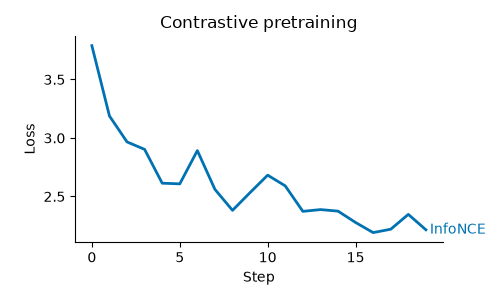

Note
Go to the end to download the full example code.
Contrastive pretraining of any model with InfoNCE#
This example pretrains a braindecode model without labels, with a contrastive objective, then uses it for sleep staging on the Sleep Physionet dataset [1] [2], as Self-supervised learning on EEG with relative positioning does with relative positioning.
Contrastive learning [3] shows the network two augmented views of each window and trains it so that the embeddings of the two views of a window are closer to each other than to the embeddings of the other windows of the batch. Every braindecode model takes part in the same three steps:
build it without a head, with
n_outputs=None;read a
(batch, dim)embedding withmodel(x, return_features=True);attach a classification head later with
model.reset_head(n_classes).
# Authors: Bruno Aristimunha <b.aristimunha@gmail.com>
#
# License: BSD (3-clause)
import matplotlib.pyplot as plt
import numpy as np
import torch
from sklearn.linear_model import LogisticRegression
from sklearn.metrics import balanced_accuracy_score
from sklearn.preprocessing import scale as standard_scale
from braindecode.augmentation import FTSurrogate, SmoothTimeMask
from braindecode.datasets.sleep_physionet import SleepPhysionet
from braindecode.models import SleepStagerChambon2018
from braindecode.modules import MLP
from braindecode.preprocessing import (
Preprocessor,
create_windows_from_events,
preprocess,
)
from braindecode.training import info_nce
torch.manual_seed(87)
rng = np.random.default_rng(87)
Loading and windowing the data#
We load two nights, convert them to microvolts, low-pass filter them at 30 Hz and cut 30-s windows labelled with their sleep stage, then z-score each window channel by channel.
dataset = SleepPhysionet(subject_ids=[0, 1], recording_ids=[1], crop_wake_mins=30)
preprocess(
dataset,
[
Preprocessor(lambda data: np.multiply(data, 1e6)), # V to uV
Preprocessor("filter", l_freq=None, h_freq=30),
],
)
sfreq = 100
window_size_samples = 30 * sfreq
mapping = { # stages 3 and 4 merged following AASM standards
"Sleep stage W": 0,
"Sleep stage 1": 1,
"Sleep stage 2": 2,
"Sleep stage 3": 3,
"Sleep stage 4": 3,
"Sleep stage R": 4,
}
windows = create_windows_from_events(
dataset,
trial_start_offset_samples=0,
trial_stop_offset_samples=0,
window_size_samples=window_size_samples,
window_stride_samples=window_size_samples,
preload=True,
mapping=mapping,
)
preprocess(windows, [Preprocessor(standard_scale, channel_wise=True)])
Extracting EDF parameters from /home/runner/mne_data/physionet-sleep-data/SC4001E0-PSG.edf...
Setting channel info structure...
Creating raw.info structure...
Extracting EDF parameters from /home/runner/mne_data/physionet-sleep-data/SC4011E0-PSG.edf...
Setting channel info structure...
Creating raw.info structure...
/home/runner/work/braindecode/braindecode/braindecode/preprocessing/preprocess.py:80: UserWarning: Preprocessing choices with lambda functions cannot be saved.
warn("Preprocessing choices with lambda functions cannot be saved.")
/home/runner/work/braindecode/braindecode/braindecode/preprocessing/preprocess.py:82: UserWarning: apply_on_array can only be True if fn is a callable function. Automatically correcting to apply_on_array=False.
warn(
Reading 0 ... 2522999 = 0.000 ... 25229.990 secs...
Filtering raw data in 1 contiguous segment
Setting up low-pass filter at 30 Hz
FIR filter parameters
---------------------
Designing a one-pass, zero-phase, non-causal lowpass filter:
- Windowed time-domain design (firwin) method
- Hamming window with 0.0194 passband ripple and 53 dB stopband attenuation
- Upper passband edge: 30.00 Hz
- Upper transition bandwidth: 7.50 Hz (-6 dB cutoff frequency: 33.75 Hz)
- Filter length: 45 samples (0.450 s)
Reading 0 ... 3308999 = 0.000 ... 33089.990 secs...
Filtering raw data in 1 contiguous segment
Setting up low-pass filter at 30 Hz
FIR filter parameters
---------------------
Designing a one-pass, zero-phase, non-causal lowpass filter:
- Windowed time-domain design (firwin) method
- Hamming window with 0.0194 passband ripple and 53 dB stopband attenuation
- Upper passband edge: 30.00 Hz
- Upper transition bandwidth: 7.50 Hz (-6 dB cutoff frequency: 33.75 Hz)
- Filter length: 45 samples (0.450 s)
/home/runner/work/braindecode/braindecode/braindecode/preprocessing/preprocess.py:431: UserWarning: Applying preprocessors [Preprocessor(fn=<function scale at 0x718e99c92660>, apply_on_array=True, kwargs={'channel_wise': True})] to the mne.io.Raw of an EEGWindowsDataset.
warn(
/home/runner/work/braindecode/braindecode/braindecode/preprocessing/preprocess.py:431: UserWarning: Applying preprocessors [Preprocessor(fn=<function scale at 0x718e99c92660>, apply_on_array=True, kwargs={'channel_wise': True})] to the mne.io.Raw of an EEGWindowsDataset.
warn(
The first night is the training set, the second night the test set.
def to_tensors(ds):
X = np.stack([ds[i][0] for i in range(len(ds))])
y = np.array([ds[i][1] for i in range(len(ds))])
return torch.as_tensor(X, dtype=torch.float32), y
splits = windows.split("subject")
X_train, y_train = to_tensors(splits["0"])
X_test, y_test = to_tensors(splits["1"])
n_chans, n_classes = X_train.shape[1], len(set(mapping.values()))
A headless model#
With n_outputs=None the model has no head: final_layer is an
nn.Identity without parameters, so no head weight sits unused during
pretraining, and the model only answers return_features=True. Any
braindecode model can stand in for SleepStagerChambon2018 here.
model = SleepStagerChambon2018(
n_chans=n_chans, sfreq=sfreq, n_times=window_size_samples, n_outputs=None
)
with torch.no_grad():
dim = model(X_train[:2], return_features=True)["embedding"].shape[1]
print(f"Embedding of shape (batch, {dim})")
Embedding of shape (batch, 272)
Contrastive pretraining#
Each view adds an FT surrogate (random Fourier phases) and a smoothly masked
stretch of 2 s to the window. A small MLP projects the embedding before
braindecode.training.info_nce(), as in [3]; only the encoder is kept
afterwards.
augment = [
FTSurrogate(probability=0.5, random_state=87),
SmoothTimeMask(probability=0.5, mask_len_samples=2 * sfreq, random_state=87),
]
def view(x):
for transform in augment:
x = transform(x)
return x
projector = MLP(in_features=dim, hidden_features=[64], out_features=32)
optimizer = torch.optim.AdamW(
[*model.parameters(), *projector.parameters()], lr=1e-3, weight_decay=1e-3
)
batch_size, n_steps, losses = 32, 20, []
model.train()
for step in range(n_steps):
x = X_train[rng.choice(len(X_train), batch_size, replace=False)]
z1 = projector(model(view(x), return_features=True)["embedding"])
z2 = projector(model(view(x), return_features=True)["embedding"])
loss = info_nce(z1, z2, temperature=0.1)
optimizer.zero_grad()
loss.backward()
optimizer.step()
losses.append(loss.item())
fig, ax = plt.subplots(figsize=(5, 3))
ax.plot(losses, color="#0072B2", lw=2)
ax.text(n_steps - 1, losses[-1], " InfoNCE", color="#0072B2", va="center")
ax.set(xlabel="Step", ylabel="Loss", title="Contrastive pretraining")
ax.spines[["top", "right"]].set_visible(False)
fig.tight_layout()

Linear probe on frozen embeddings#
A logistic regression on the frozen embeddings measures what the encoder learned without labels.
@torch.no_grad()
def embed(X):
model.eval()
return torch.cat(
[model(x, return_features=True)["embedding"] for x in X.split(256)]
).numpy()
probe = LogisticRegression(max_iter=1000, class_weight="balanced")
probe.fit(embed(X_train), y_train)
probe_score = balanced_accuracy_score(y_test, probe.predict(embed(X_test)))
print(f"Linear probe balanced accuracy: {probe_score:.2f}")
Linear probe balanced accuracy: 0.61
Fine-tuning with a new head#
reset_head attaches a classification head for the five sleep stages;
from then on model(x) returns logits, and the whole network is fine-tuned
with the labels.
model.reset_head(n_classes)
optimizer = torch.optim.AdamW(model.parameters(), lr=1e-3, weight_decay=1e-3)
y_train_t = torch.as_tensor(y_train)
model.train()
for step in range(n_steps):
idx = rng.choice(len(X_train), batch_size, replace=False)
loss = torch.nn.functional.cross_entropy(model(X_train[idx]), y_train_t[idx])
optimizer.zero_grad()
loss.backward()
optimizer.step()
model.eval()
with torch.no_grad():
y_pred = torch.cat([model(x) for x in X_test.split(256)]).argmax(1).numpy()
print(f"Fine-tuned balanced accuracy: {balanced_accuracy_score(y_test, y_pred):.2f}")
Fine-tuned balanced accuracy: 0.25
With two nights and a few dozen steps this only shows the mechanics; more recordings and longer pretraining are needed for useful representations.
References#
Total running time of the script: (0 minutes 8.120 seconds)
Run this example